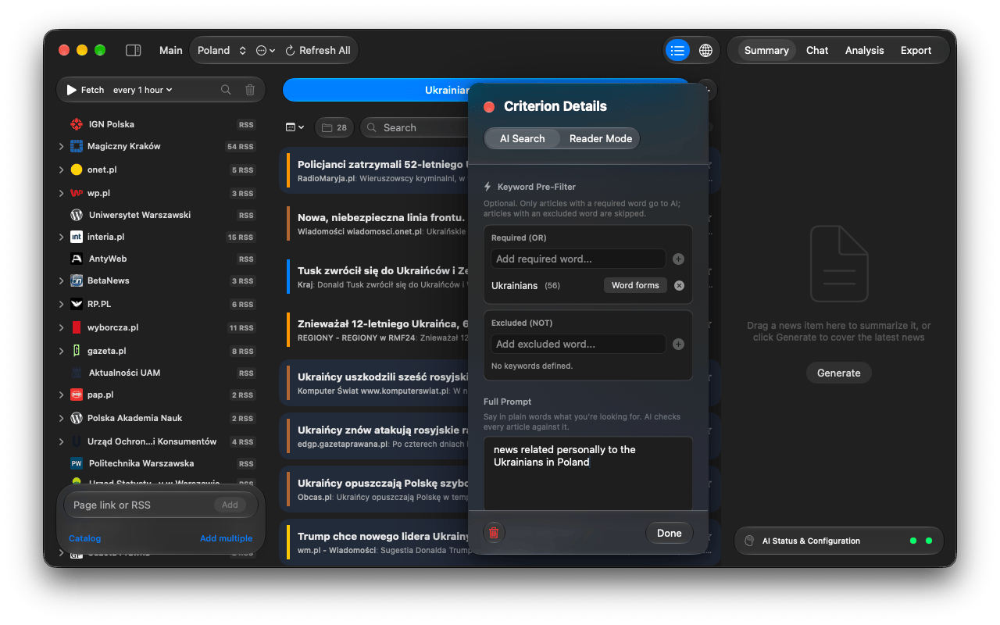
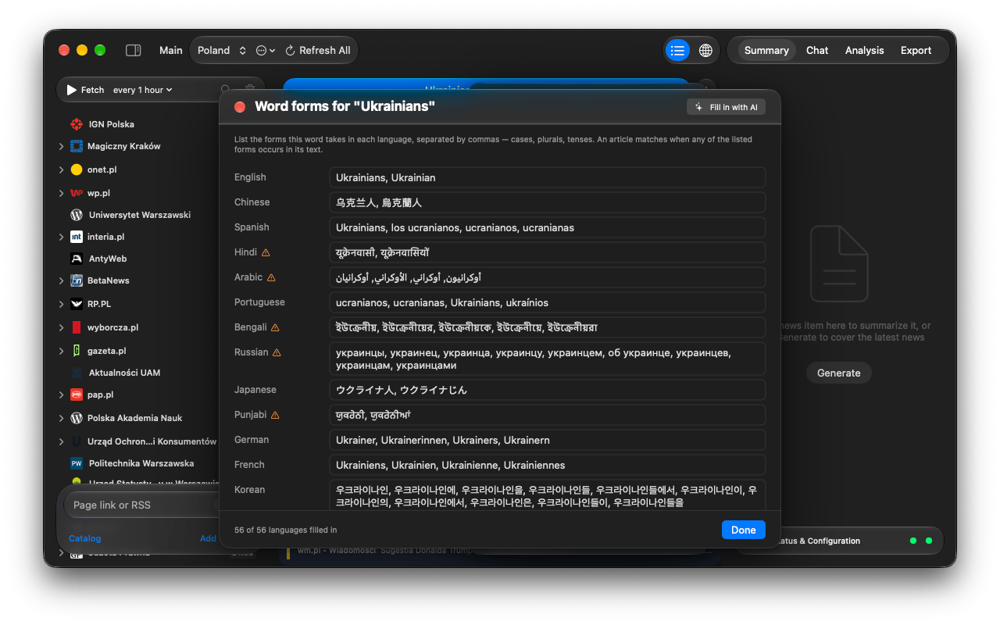

Handbook · Reading
AI Search criteria
Describe what you want in plain words; the AI reads every article and keeps only the matches.
An AI Search tab is a standing question to the AI: every new article from the workspace is checked against it, and only matches land in the tab. You can have several tabs, each with its own criterion.
Create a criterion
- Click + at the end of the tab strip. The Feed Setup panel opens with AI Search selected.
- In Full Prompt, say in plain words what you are looking for, as specifically as you can:
Economic forecasts for the European real estate market. - Optionally add keywords (see below) and an age limit, then press Done.
- The tab gets a short title written by the AI. Edit later with the sliders icon on the tab.

AI Search prompts need an analysis AI (Settings → AI → Criteria & Tags). If it is set to Not Selected, prompt tabs stay empty. See Choosing an AI.
Keywords
Keyword Pre-Filter runs before the AI and costs nothing:
- Required (OR): the article must contain at least one of these words.
- Excluded (NOT): an article with any of these words is dropped. Excluded words win.
- A tab with keywords and no prompt works without AI at all.
Word forms in other languages
Keywords match literally, so Germany won't find Deutschland. Click Word forms on a keyword chip to list its forms per language, or press Fill in with AI. The AI first asks what the word means (useful for words with several senses), then fills in the forms; your own entries are kept.

How an article is matched
- Keywords are checked first.
- If there is a prompt, the analysis AI answers yes or no. Answers are cached, so re-fetching is cheap.
- With Skip off-topic news without AI on (Settings → AI, on by default), an on-device model learns from the AI's answers and skips plainly unrelated news. This saves about half the requests and can rarely miss a match.
Keep tabs tidy
- Delete news older than in the editor cleans a tab up automatically. Favorites are kept.
- The trash icon on a tab clears it by hand.
- The free version allows three tabs; see Free and full version.
Questions or problems? Open an issue in the
GitHub repository.